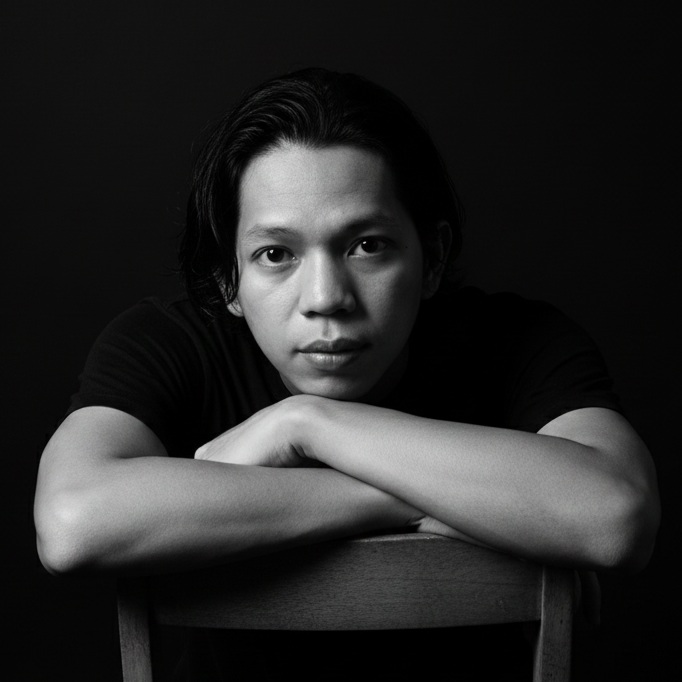

Tentang Saya
Saya adalah seorang Creator, Writer, Artist, dan Developer yang percaya bahwa setiap ide selalu memiliki jalan untuk menemukan bentuknya sendiri. Bagi saya, sebuah gagasan mungkin bermula dari sesuatu yang sederhana—sebuah pikiran, sebuah cerita, sebuah sketsa, atau sekadar rasa ingin tahu—lalu perlahan tumbuh menjadi sesuatu yang dapat dilihat, digunakan, dan dirasakan.
Saya berjalan di antara seni dan teknologi, di antara imajinasi dan logika. Saya menulis untuk memberi suara pada pikiran, menciptakan untuk memberi bentuk pada imajinasi, dan menulis kode untuk membawa gagasan menjadi sesuatu yang nyata. Di antara garis, kata, warna, dan kode, saya menemukan cara saya sendiri untuk bercerita.
Saya menikmati proses yang tidak selalu terlihat: mencari sebuah ide, menyusun potongan-potongan kecil, mencoba, gagal, mengulanginya kembali, lalu perlahan melihat sesuatu yang sebelumnya hanya ada di dalam kepala mulai memiliki bentuk. Bagi saya, proses menciptakan bukan sekadar tentang hasil akhir, tetapi juga tentang perjalanan yang terjadi di sepanjang jalan.
Saya terus belajar, bereksperimen, dan membangun sesuatu dari nol. Tidak selalu untuk mengejar kesempurnaan, tetapi untuk menemukan kemungkinan baru dan memahami sejauh mana sebuah ide dapat dibawa. Setiap proyek adalah ruang kecil untuk tumbuh, tempat saya dapat meninggalkan sedikit bagian dari diri saya, sekaligus menemukan sesuatu yang baru di dalam prosesnya.
Saya percaya bahwa karya yang berarti tidak selalu harus menjadi yang paling ramai. Terkadang, ia hadir dengan tenang—dalam sebuah detail kecil, sebuah pengalaman yang terasa alami, sebuah cerita yang tinggal lebih lama, atau sebuah gagasan sederhana yang berhasil menemukan tempatnya.
Saya masih terus berjalan dan menciptakan. Mengumpulkan ide, merangkai cerita, menggambar kemungkinan, dan membangun dunia kecil saya sendiri, satu karya pada satu waktu. Mungkin tidak semuanya akan selesai hari ini. Namun, selama masih ada sesuatu yang ingin dibayangkan, akan selalu ada sesuatu yang ingin saya ciptakan.